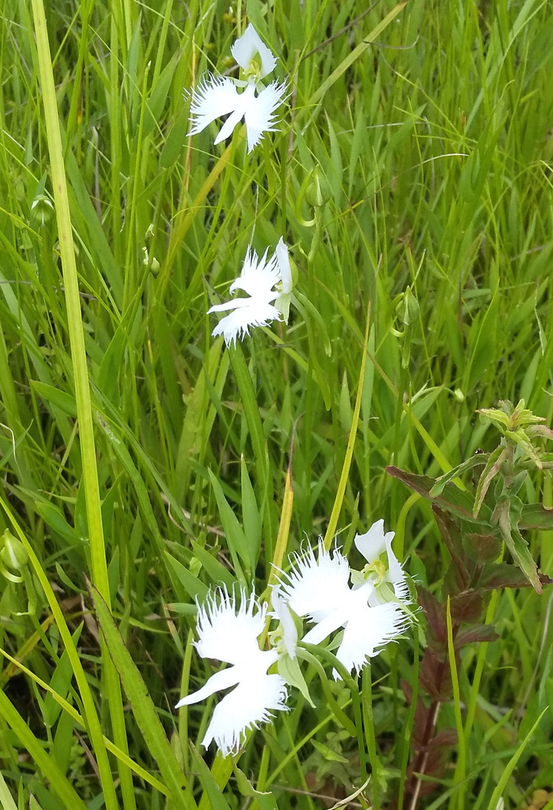
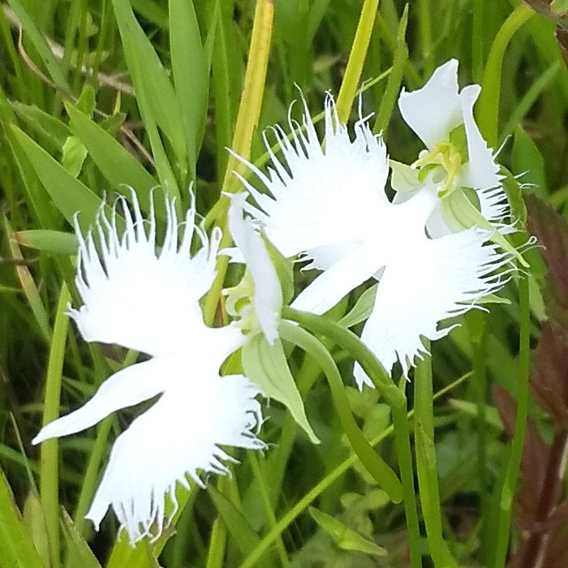
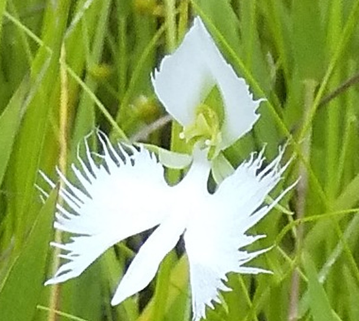
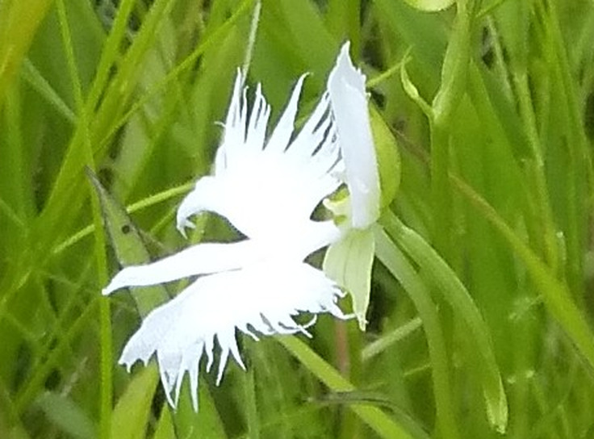

地図を読み込んでいるよ…
🔍 写真も地図も、押しているあいだ拡大して見られるよ（スマホは指を置いてすこし待ってね）。
🌍 の地図＝この子がもともと自生している場所を緑に。日本の本州（秋田県以南）・四国・九州と、朝鮮半島・台湾・中国の在来種。日当たりのよい低地の湿地にだけ生える。⚠この写真がどこの湿地かは聞いていない。くわしくは下の地図の説明を見てね。
⭐湿地の子だよ＝Wikipediaは「台湾、朝鮮半島、日本に分布する。日本では本州（秋田県以南）、四国、九州まで広く分布しているが、生育環境は低地の湿地に限定される」、三河の植物観察は「在来種 本州、四国、九州、中国」とする。⭐だから北海道は塗っていない。⚠中国は「中国」としか読めなかったので、国ぜんぶが緑になっている＝ほんとうはもっとせまいはず。⚠Takeda ら（2025）は極東ロシアも挙げるが、国ごとしか塗れないロシアは塗らなかった。⚠⚠そして、緑の中でも「日当たりのよい湿地」にしかいない＝地図の緑は、ほとんどが「いない場所」＝⭐湿地が消えると、この子も消える。東京都・福井県・徳島県・高知県では絶滅、広島県は絶滅危惧II類（Wikipedia）。⚠この写真がどこの湿地かは、まだ聞いていないよ。
⚠ 地図は国（日本と中国だけ県・省）までしか塗れないから、ほんとうの分布より広く見えていることがあるよ。地図はだいたいの場所。正確なところは、上の文を見てね。
サギソウ（鷺草）
Pecteilis radiata (Thunb.) Raf.
別名 · サギラン／英名 white egret flower・fringed orchid ⭐Pecteilis＝くし、radiata＝放射状 シノニム Habenaria radiata
ラン科 · Orchidaceae（サギソウ属 Pecteilis · キジカクシ目 Asparagales）── ⭐図鑑で4人目のラン科（002 ネジバナ・148 クマガイソウ・266 バニラ）
燻太さんの言葉「確かに真っ白い鳥そっくり。この形状、受粉のための標識と足場の役割なんだろうけど、真っ白の花は虫の目にはっきり映るのかな。それとも紫外線を反射していたりするのかな？」── ⭐「足場」は2025年の論文にそのまま書いてあった。紫外線は、測った出典が無いので「たぶん吸収・でも測らないと分からない」
⭐⭐⭐⭐⭐ 名前と学名の由来 ── 白鷺と、放射状
- ⭐⭐ 和名「サギソウ（鷺草）」＝唇弁のひらいた様子が、シラサギが翼を広げた姿に似ているから（三河・Wikipedia）。⭐英名も white egret flower（白鷺の花）（三河）＝どこの国の人が見ても、鳥に見える。
- ⭐⭐ 属名 Pecteilis＝ラテン語 pecten「くし」から＝⭐唇弁のふちが、くしの歯のように細かく裂けることを指している（⚠語源は辞書どおりで、命名者がそう書いた文までは読めていないよ）。⭐英名のもうひとつ fringed orchid（房飾りのラン）も同じところを見ている。
- ⭐⭐⭐ 種小名 radiata＝ラテン語 radiatus「放射状の・光線を放つ」＝⭐翼のふちの裂片が、放射状にひろがる姿。
- ⭐ 1784年、ツンベルクが Orchis radiata として命名（学名の (Thunb.) がそれ）＝⭐332 ハマナスと同じ年、同じ人。⭐その後ラフィネスクがサギソウ属 Pecteilis に、シュプレンゲルがミズトンボ属 Habenaria に移した＝⭐論文では今も Habenaria radiata と書くものが多い（Takeda ら 2025・Shigeta & Suetsugu 2020 はどちらも Habenaria）。
- ⭐ 中国名は狭叶白蝶兰（葉の細い白い蝶のラン）（三河）＝⭐中国の人には鳥ではなく蝶に見えた。
⭐⭐⭐⭐⭐ 「受粉のための標識と足場」── 燻太さんの読みは、論文に書いてあった
- ⭐ 燻太さんの言葉＝「この形状、受粉のための標識と足場の役割なんだろうけど」。
- ⭐⭐⭐⭐⭐ 答え合わせ＝足場、そのとおり。──Takeda ら（2025・Plants）＝「Hawk moths visiting Habenaria radiata flowers have been observed grasping the lip fringes with their forelegs while inserting their proboscis deep into the spur」＝⭐⭐スズメガは、唇弁の房飾り（翼のふちの糸）を前脚でつかんで、口吻を距の奥へ差しこむ。⭐翼のふちの細かい裂け目は、飛びながら蜜を吸う客のための手すりだった。
- ⭐⭐⭐ だれが来るか＝Takeda ら 2025＝昼はセセリチョウ（イチモンジセセリ Parnara guttata・オオチャバネセセリ Polytremis pellucida・チャバネセセリ Pelopidas mathias）、夜はスズメガ（セスジスズメ Theretra oldenlandiae・コスズメ T. japonica・キイロスズメ T. nessus）。⭐Wikipedia「距の長さに見合った長さの口吻を持つセスジスズメなどのスズメガ科昆虫が飛来して吸蜜する。この時に花粉塊が複眼に粘着し、他の花に運ばれる」＝⭐⭐花粉のかたまりは、客の目に貼りつく。
- ⭐⭐⭐ 距の長さが客を選ぶ＝三河「距は…長さ25〜40mm×幅約1.5mm、細く、先でわずかに広がり」・Wikipedia「距は3〜4cmの長さに垂れ下がり、先端は次第に太くなり、この末端に蜜が溜まる」＝⭐3〜4cmの管の底に蜜がある＝それだけ長い口をもつ虫しか届かない＝⭐Wikipedia「この花はガによる花粉媒介の送粉シンドロームの特徴を示しており」＝⭐⭐白い大きな花・長い距・夜に強まる香り＝ガを呼ぶ花の三点セット。
- ⭐⭐⭐ そして、スズメガの飛ぶ力が、湿地どうしをつなぐ＝Wikipedia「スズメガ科のガは飛翔力に富み、かなりの長距離を移動するので、山間に点在する湿地の個体群間でも遺伝子の交流が頻繁に起きていることが示唆されている」＝⭐⭐湿地は点々としか残っていないけれど、ガが夜に飛んで、花粉を運んでつないでいる。
- ⚠⭐⭐ ただし、意外な脇役もいる＝Shigeta & Suetsugu（2020・Journal of Plant Research）「H. radiata is pollinated by both hawkmoths and thrips」＝⭐アザミウマ（thrips）が花粉塊にもぐりこんで、粉っぽい花粉のかたまりを崩し、すぐ下の柱頭に落とす＝同じ花の中での自家受粉＝⭐「スズメガ向けの体なのに、アザミウマも種を作るのを手伝っている」（⭐サギソウの花粉塊は、ふつうのランのようにかたくなくて、粉っぽくてほろほろ崩れる＝同論文）。
- ⭐⭐ 「標識」のほうは、次の節で。
⭐⭐⭐⭐⭐ 「真っ白の花は、虫の目にはっきり映るのかな。紫外線を反射していたりするのかな？」
- ⭐ 燻太さんの問い＝「真っ白の花は虫の目にはっきり映るのかな。それとも紫外線を反射していたりするのかな？」──⭐⭐答えは3つに分けるね。①主な客は夜のガ ②夜のガは色まで見える ③白い花の多くは紫外線を吸収する（でもサギソウを測った出典は見つからなかった）。
- ⭐⭐⭐ ①主な客は夜のスズメガ（上の節）＝⭐だから「虫の目に映るか」は、まず夜の目で考える。⭐⭐夜の草むらで、白い花はいちばん明るいもの＝白は可視光をほぼ全部はね返すから、暗い葉の上でひときわ明るく浮く＝⭐ぼくらの目にも、写真①で白だけが飛び出して見えるのと同じこと。⭐Wikipedia「夜のほうが香りが強く」＝目だけでなく鼻にも合図を出している。
- ⭐⭐⭐⭐ ②夜のガは、星明かりの下でも色を見分ける＝Kelber, Balkenius & Warrant（2002・Nature）「the nocturnal hawkmoth Deilephila elpenor uses colour vision to discriminate coloured stimuli at intensities corresponding to dim starlight (0.0001 cd m-2)…In identical conditions humans are completely colour-blind」＝⭐⭐人は夜には色が見えないけれど、スズメガ（ベニスズメ）は3種類の光受容細胞を使って、星明かりでも色を見分けた＝⭐「the possession of three photoreceptor classes…indicates that colour vision has a high ecological relevance in nocturnal moths」＝夜のガにとって、色を見ることは生きるうえで大事。⭐だから「白」は、ガにとってただ明るいだけでなく、色としても見えている。
- ⭐⭐⭐⭐ ③紫外線＝Kevan, Giurfa & Chittka（1996・Trends in Plant Science「Why are there so many and so few white flowers?」）＝⭐⭐人の目に白い花の多くは、紫外線を反射せず吸収する＝Lunau（2025・Plant Biology）が引くところでは「Bee-pollinated white flowers strongly absorb UV light and thus are bee-bluegreen」「UV-reflecting white flowers provide little colour contrast against a background of green leaves (Kevan et al. 1996)」＝⭐⭐⭐つまり紫外線を反射する白は、緑の葉と区別がつきにくくなる（葉も紫外線を少し反射するから）＝紫外線を吸収する白のほうが、ハチの目には「青緑」として葉から浮き上がる。⚠⚠ただしこれはハチの話。サギソウの花そのものの紫外線反射を測った出典は、ぼくには見つけられなかった＝⭐燻太さんの「紫外線を反射していたりするのかな」は、測らないと分からない＝正直にそう書いておくね。⭐白い花の一般則からの予想は「反射していない（吸収している）ほうが多い」だけど、予想は予想。
- ⭐⭐ 「標識」＝白い大きな面＝⭐白い翼と胴が、遠くからの看板。房飾りが手すり。距の底の蜜が報酬。花粉塊は客の目に貼りつく＝⭐⭐燻太さんの「標識と足場」は、この花の設計図をそのまま言い当てていた。
⭐⭐⭐ この植物のこと ── 湿地にしか住めない、減っている子
- ラン科サギソウ属の多年草。高さ15〜50cm（Wikipedia）／18〜37cm（三河）。茎は細く、線形の葉が3〜5枚まばらにつき、先に1〜3輪（三河・Wikipedia）。花の径は3cmほど（Wikipedia）。⭐唇弁は長さ13〜18mm×幅16〜25mm（三河）＝花のほとんどが唇弁＝翼。
- ⭐⭐ 地下に球根（塊茎）＝Wikipedia「根によく似た太い地下茎が何本か伸び、この先端が芋状に肥大してこの部分だけが年を越す」＝⭐冬は地上に何も残らない。
- ⭐⭐ 日当たりのよい湿地にしか生えない（三河・Wikipedia）＝Wikipedia「生育環境は低地の湿地に限定される」。⭐分布は本州（秋田県以南）・四国・九州と、朝鮮半島・台湾（Wikipedia）／中国（三河）＝⭐Takeda ら 2025 は極東ロシアも挙げる。
- ⚠⚠⚠ 減っている＝環境省レッドリストの準絶滅危惧（NT）（Wikipedia）＝⭐理由は「ゴルフ場や宅地開発などによる湿地の消滅、栽培目的の人為的な採集、自然遷移に伴う湿地の乾燥化」（同）。⭐⭐広島県は絶滅危惧II類（VU）、東京都・福井県・徳島県・高知県では絶滅（EX）（同）。⚠⚠Wikipedia「保護されている自生地ですら盗掘が絶えない…無計画な『お土産採集』『観光記念採集』が相当数あるものと推察される」＝⭐園芸店で1球数百円で買えるのに、野生のものを掘る人がいる＝⭐⭐この写真の湿地も、そっとしておいてほしい場所。
- ⭐ 開花のしくみ＝Takeda ら 2025「the wing part of the lip folds inward in the bud and fully expands in two hours after blooming」＝⭐翼はつぼみの中で内側に折りたたまれ、咲いてから2時間でひらききる＝⭐房飾りは、細胞分裂のあとに細胞が向きをそろえて伸びて作られる（同）。
- ⭐ 世田谷区の「区の花」（1968年）・姫路市の花（Wikipedia）＝⭐世田谷には、白鷺の足に遺書をくくりつけて飛ばした常盤姫の昔話がある＝力尽きた白鷺が多摩川のほとりでサギソウになった、という御伽噺（同）。⚠でも今の世田谷区には自生地は残っていない（同）。⭐190円の普通切手のモデルにもなっていた（2002年まで）（同）。
⚠ 同定について ── この形の花は、日本にはこの子だけ
- ⭐⭐⭐ 白い大きな花で、唇弁が深く3裂・側裂片が扇形で外側の縁が深く房状に裂ける・中裂片は線形で全縁（三河・Wikipedia）＝写真②③のとおり。⭐淡緑の萼片と、白い花弁が背萼片と合わさって立つフード（三河）＝写真③④。
- ⭐ 落とした相手＝ミズトンボ（アオサギソウ）＝花が淡緑で直径約1cm・唇弁が十字形／オオミズトンボ＝花は白いが唇弁が十字形で、房状に裂けない（三河）。
- ⚠ 距は写真で確かめられなかった（草にまぎれている）＝⏳宿題②。⭐でも房状の翼と線形の胴があれば、ほかに候補はいない。
- ⚠ どこの湿地かは聞いていない＝⏳宿題①。
⭐⭐⭐ プレゼントの写真 ── 友人から
- ⭐⭐ この写真は、燻太さんの友人が2024年7月28日の昼に撮って、プレゼントしてくれたもの。⭐燻太さんの言葉「確かに真っ白い鳥そっくり」。
- ⭐ 図鑑で友人の写真は、107 ワルナスビ・108 オオカナダモに続いて3枚目＝⭐だから、この写真には「© Kunta & Yousuke」のマークも隠し透かしも入れていない（撮った人のものだから）。
- ⭐⭐ 燻太さんの図鑑には、まだ野生のランが少ない（002 ネジバナだけが自分で見つけた野生のラン）＝⭐サギソウは、湿地という「まだ行っていない場所」の花＝⭐⭐友人の目が、図鑑の地図をひとつ広げてくれた。
⏳ 宿題 ── 7つ
- ⏳⭐⭐⭐⭐⭐ ①友人に「どこの湿地か」を聞く＝場所が分かれば地図の説明が書ける。
- ⏳⭐⭐⭐⭐ ②距を横から見る＝3〜4cmの管の底に蜜（三河・Wikipedia）。
- ⏳⭐⭐⭐⭐ ③夜に見に行く＝スズメガが来るか。花粉塊が複眼に貼りつく瞬間。⚠湿地の足もとは昼に確かめてから。
- ⏳⭐⭐⭐ ④昼はセセリチョウが来るか＝イチモンジセセリ・チャバネセセリ・オオチャバネセセリ（Takeda ら 2025）。
- ⏳⭐⭐ ⑤香り＝昼と夜で。
- ⏳⭐⭐ ⑥開いたばかりの花＝咲いてから2時間で翼がひらききる（Takeda ら 2025）＝朝に。
- ⏳⭐ ⑦おまけのミズトンボ＝緑の十字。
- ⚠⚠⚠ 採らない・掘らない・踏みこまない＝準絶滅危惧・広島県はVU。
参考：三河の植物観察「サギソウ」（Pecteilis radiata (Thunb.) Raf.／synonym Habenaria radiata／英名 white egret flower, fringed orchid／中国名 狭叶白蝶兰／花期7〜8月／高さ18〜37cm／日当たりのよい湿地／在来種 本州、四国、九州、中国／和名の由来はシラサギが翼を広げたように見えることから／唇弁は不規則な扇形、長さ13〜18mm×幅16〜25mm。側裂片は斜め扇形…外側の縁は深い房状へりの不規則な切れ込みがある。中裂片は線形、長さ5〜10mm…全縁／距は垂れ下がり…長さ25〜40mm×幅約1.5mm、細く、先でわずかに広がり／背萼片はほぼ直立し、淡緑色／花弁は直立し、背萼片と輻合し）／三河の植物観察「ミズトンボ」（別名アオサギソウ／日本固有種／丘陵地〜山地の湿地／花は直径約1cmの淡緑色、唇弁が十字形／距は垂れ下がり、先端が球状／全国でも絶滅危惧II類／オオミズトンボは花が白色で唇弁は十字形）／Wikipedia「サギソウ」（茎は15〜50cm、先端近くに1〜3輪／花の径は3cmほど／距は3〜4cmの長さに垂れ下がり、先端は次第に太くなり、この末端に蜜が溜まる／花の香りはほとんど無いが…夜のほうが香りが強く／ガによる花粉媒介の送粉シンドローム…セスジスズメなどのスズメガ科昆虫が飛来して吸蜜する。この時に花粉塊が複眼に粘着し／スズメガ科のガは飛翔力に富み…湿地の個体群間でも遺伝子の交流／台湾、朝鮮半島、日本／本州（秋田県以南）、四国、九州…生育環境は低地の湿地に限定される／準絶滅危惧（NT）・湿地の消滅、栽培目的の人為的な採集、湿地の乾燥化／広島県 絶滅危惧II類・東京都など絶滅／世田谷区の花・常盤姫の御伽噺／190円切手）／Takeda S. ら (2025) Plants “Morphological and Transcriptome Analysis of the Near-Threatened Orchid Habenaria radiata with Petals Shaped Like a Flying White Bird”（the wing part of the lip folds inward in the bud and fully expands in two hours after blooming／a spur that is a long tubular structure originating from the base of the lip that accumulates nectar／diurnal butterflies (Parnara guttata, Polytremis pellucida, Pelopidas mathias) and nocturnal hawk moths (Theretra oldenlandiae, T. japonica, T. nessus)／Hawk moths…grasping the lip fringes with their forelegs while inserting their proboscis deep into the spur／Japan, China, South Korea, and Far East Russia／Near Threatened on the Red List of Japan）／Shigeta K. & Suetsugu K. (2020) Journal of Plant Research 133: 499–506 “Contribution of thrips to seed production in Habenaria radiata, an orchid morphologically adapted to hawkmoths”（H. radiata is pollinated by both hawkmoths and thrips／Thrips intrude into the pollen sac, causing several massulae to be shed onto the stigma of the same flower／pollinia…are mealy and friable）／Kelber A., Balkenius A. & Warrant E. J. (2002) Nature 419: 922–925 “Scotopic colour vision in nocturnal hawkmoths”（the nocturnal hawkmoth Deilephila elpenor uses colour vision to discriminate coloured stimuli at intensities corresponding to dim starlight (0.0001 cd m-2)…In identical conditions humans are completely colour-blind／the possession of three photoreceptor classes…indicates that colour vision has a high ecological relevance in nocturnal moths）／Lunau K. (2025) Plant Biology “Bees, flowers and UV”（Bee-pollinated white flowers strongly absorb UV light and thus are bee-bluegreen／UV-reflecting white flowers provide little colour contrast against a background of green leaves (Kevan et al. 1996)／UV-reflecting white flowers are less saturated for bees compared to UV-absorbing white ones (Lunau et al. 1996)＝⭐Kevan, Giurfa & Chittka (1996) Trends in Plant Science “Why are there so many and so few white flowers?” の孫引きになるので、原典はまだ読めていないよ）。⚠サギソウの花の紫外線反射を測った出典は見つけられなかった。